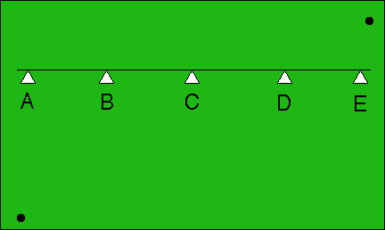
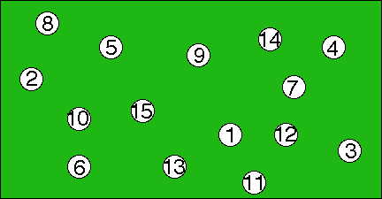
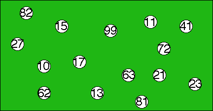

Jeanne W. Eisenstadt is a retired psychologist in Loveland Colorado, and a member of the Colorado League of Women Voters. She submitted a psychology-based criticism of range voting to the Colorado legislature. We now go through her criticism refuting it point by point.
Eisenstadt: "Runoff voting is already familiar to voters, and IRV would make only a small change. Range Voting introduces a totally different technique of assessment..."
Reality (A): Range is not un-"familiar." Who among us has not seen the judges at the Olympics? Who among us has not rated a member of the opposite sex on an 0-to-10 scale? Who among us has not been graded on tests 0-to-100 with the average score used to determine rank in class? I suggest to you that essentially every voter is familiar with that already, whereas comparatively few voters know the rules of instant runoff voting and almost none appreciate its bizarre properties.
Reality (B): Studies so far unanimously have shown range voting decreases voter errors, whereas instant runoff increases them (in San Francisco by a factor of 7). This experimental fact contradicts Eisenstadt's familiarity theory.
Eisenstadt: "Trying to implement [range voting] would face many more individual and political obstacles."
Reality (A): Range voting will work on every voting machine in the USA, right now. No reprogramming needed. No repurchase needed. No modification needed. In contrast, Instant Runoff will not work on any voting machine currently sold in the USA without modification & reprogramming. [Admitted by IRV advocate Rob Richie quoted in W.Poundstone: Gaming The Vote, Hill & Wang 2008.] Which sounds like more of an "obstacle" to you?
Reality (B): When San Francisco was mandated to adopt Instant Runoff, they did not, due to such obstacles, for over two years. They had to be sued, and only adopted it when they lost the suit. Then, after they adopted it (2004), they were unable to announce the results of all nontrivial races, because of a software failure which took several days to fix. Then California (2008) decertified the computerized voting machines S.F. was using (too hackable, lies by their manufacturers) leaving them up the creek with no paddle. Any of that sound like an "obstacle" to "trying to implement" anything to you?
Reality (C): Instant Runoff voting cannot be counted in precincts. It has to be counted centrally. (Precisely what we mean by that explained here.) That is a giant change in most BOE organization and procedures. Sound like an "obstacle to implementation" to you?
Reality (D): Instant Runoff voting has been repealed in many places by voters who evidently found it unsatisfactory. Recent examples (2005-2010) include Burlington VT, Aspen CO, Pierce County WA, and Cary NC. Bucklin and STV (both rank-order ballot and resembling IRV) voting systems were also adopted and then repealed in a large number of US cities in the first half of the 20th century, for example New York City, Cincinnati OH, Houston TX, San Francisco CA, Cleveland OH, and several towns in Eisenstadt's home state of Colorado such as Grand Junction. The nationwide repeal percentage in that previous repeal-wave was over 95%.
Eisenstadt: "Nunnally... argues that making comparative judgments is a natural process, known and used by the time we graduate from kindergarten – we can easily say who is bigger, older, smarter, etc. Converting these comparative assessments into absolute numbers does not happen naturally and is not how we make our choices in 'real life'."
Reality (A): In real life, I claim everybody, including Nunnally himself, makes important choices using numbers. For example grades on report cards. Prices of houses. Medical lab reports. Temperature. And here's a simple naturalness test you can try yourself:
The two black dots are connected by an invisible string. Quick: Where would you guess that string crosses the line?

Did you guess "D"? I did. I did not naturally proceed to say
All five guesses are equally plausible because all I can naturally judge is comparative assessments that say each choice A,B,C,D,E is somewhere the left of one dot and to the right of the other. I cannot naturally see distance, I only can decide "is left of" or "is right of," not "by how far" hence all the choices seem equally natural to me.
No. I said "one of those guesses just naturally seems the most plausible." How about you?
Reality (B): Eisenstadt left unmentioned famous psychological research that refutes her claims about inherent naturalness of rating versus rank-ordering. Consider young children. Jean Piaget studied how they learn things and what they are capable of doing at what age. He found that during the "Period of Concrete Operations (7-11 years old)" children become able to sort objects into order according to one of several characteristics. So rank-ordering is fairly unnatural and difficult for children, in the sense they supposedly need to be age≥7 to do it.
Contrast this with rating. Children at a very early age have a concept that "more is better" where "more" is a 1-dimensional notion. (In fact, one of Piaget's famous experiments involved showing children beakers of liquid and asking them pick the one with the most liquid. The younger children, age 2-4, select the tallest beaker even if it is narrow.) Appreciation of the nature of volume comes at the greater age of 6, but already by age 2-4 they are understanding they want more and a 1-dimensional concept of more. I believe this concept is very natural and stays with you even as an adult. To verify that, try this quick test:
Which row has more squares?
| A. |
| B. |
Did you answer "B"? I did. Until I thought about it.
Range Voting scoring could be done using a slider device on a voting machine looking very much like this picture. (At present, no voting machine has such a device. But it could.) Then it would be usable even by a caveman who'd never even heard of a "number" or the concept of "sorting into order." We have more trouble seeing how such a caveman could handle Instant Runoff Voting.
Reality (C): Honeybees and ants use range voting. They can handle it despite their tiny brains. (See also bonobos.) But no animals have ever been observed using instant runoff voting. I suggest to you that one measure of the "naturalness" of something... is whether it occurs in Nature!
Reality (D): Professor Alan Sherman recently carried out a range voting election among 40 children in kindergarten. Results (pdf): apparent total comprehension, and the children had zero spoiled ballots (unlike with plain-plurality voting, where there were 6 ballot-invalidating errors)!
Reality (E): There's fundamental reasons behind that. If you'll forgive me for bringing in Computer Science (a field I've always thought psychologists ought to pay some attention to)... they've proved theorems to the effect that it is impossible for a computer to sort N items into order unless it does at least order N·log N work. (Donald E. Knuth: Art of Computer Programming, III: Sorting and Searching, Addison Wesley, 3rd ed 1998. Indeed, a stronger theorem states it is impossible, given N items, to tell whether two are equal, unless the computer does at least order N·log N work: Michael Ben-Or: Lower bounds for algebraic computation trees, Proceedings 15th ACM Symposium on Theory of Computing (1983) 80-86; Wolfgang Maass: On the use of inaccessible numbers and order indiscernibles in lower bound arguments for random access machines, J. Symbolic Logic 53,4 (1988) 1098-1109 ; and for a "Turing machine," which is a different maximally-simple kind of computer, at least quadratic work is necessary Amir M. Ben-Amram, Omer Berkman, Holger Petersen: Element distinctness on one-tape Turing machines: a complete solution, Acta Informatica 40,2 (Oct. 2003) 81-94 .) But assigning a number to each of N items can be done in only order N work! Even on a Turing machine! I.e, fundamentally, by theorem, rating is algorithmically easier than ranking.
Too abstract, or don't think computer science is relevant to your mind? Then try this experiment the next time you play pool. After the break, rank-order all the balls from best=15 to worst=1 by moving your finger (E.g. "here is 15 [points with finger] here is 14 [indicates], etc."). Contrast the time it took you to do that, with the time it took you simply to read aloud the number on each ball in, say, the random East-to-West order in which the balls happen to lie on the table. Which task takes longer?
For the picture above, it took me 17 seconds for the ordering task but only 8 seconds for the rating task. Here's another with non-uniformly spaced numbers this time:
Whoa! This one took me 61 seconds for the ordering task but only 12 seconds for the rating task. It might also be interesting if instead of numbers like "11" written on each ball it was 11 dots on the ball. I haven't tried that variation but I am confident at least that approximate rating would still be extremely fast compared to rank ordering.
Bruce Gilson comments on the fact rating is easier than ranking – at least on ballots with enough candidates – despite the fact that a ratings ballot provides more information:
"I actually voted in an election conducted under a Condorcet method (specifically Schulze's beatpath method): the Wikimedia board election. There were more than a dozen candidates, and about the only way I could vote intelligently was to first rate them, then turn that into a ranked ballot. So obviously a rating-type ballot (where the second step was not needed) would be easier and quicker to cast."
Here's another experiment: Rate and rank-order, a dozen of the early Democratic and/or Republican candidates in the 2008 presidential race. Once you've sorted them all into order: do you regard all the differences between adjacent candidates as equal-strength, or view some gaps as larger than others? If you were describing your feelings to me about them, would you prefer that I solely learn your ordering and never learn more about your ratings of them?
You might object that in a real election you would only vote for two or three candidates that you liked and had a chance of winning. Of course you can do that with Range Voting as well. And what if you like two candidates equally – why should you be forced to say which one you "like better"? With Range Voting there is no problem with giving two or more candidates the same rating. But with IRV, if you give two candidates the same rank, your ballot may not be counted.
Reality (E): hotornot.com is a "range voting" (try it!) website that rose into the top-25 in advertising revenue among all web sites. They've collected over 10 billion range votes. I believe that is more data than Jeanne Eisenstadt, and every other psychologist, all combined over all time, ever collected. (Also: they trivially measure time data to submillisecond accuracy, which we suspect few, if any, psychologists in Eisenstadt's era did.) It's also far more votes than all US presidential elections combined.
As such, Hotornot.com deserves some respect as one of the largest psychometric and voting experiments ever conducted. They found that voters cast range votes faster than other kinds of votes they also tried (such as 1-bit two-picture hotness comparisons, and a 2-way "hot" versus "not" judgment). In other words, Eisenstadt is exactly wrong, again. Ratings are actually more natural – in terms of measured speed of real human self-motivated unpaid voters – than other kinds of votes, in spite of the plausible guess that the other kinds were simpler. That's why hotornot.com abandoned the other kinds and switched to range voting.
Eisenstadt: "Lopez... confrontation by too many response alternatives muddles respondents. Respondents rarely make stable discriminations among more than 6 levels. Sometimes 2 or 4 levels are all they can negotiate."
Reality: Consulting the very 1978 "Psychometric Theory" book by Nunnally (chapter 14 "rating scales") that Eisenstadt cited, we find the claim that many studies – evidently in Nunnally's view massive evidence – show increasing the number of points in the scale "monotonically increases reliability up to at least 20 points" (however after 11 points the gain becomes small). More is better, so the implication of the Lopez quote is exactly wrong. So the study/quote by Lopez that Eisenstadt cites appears to be atypical/misleading.
Eisenstadt: "Range voting is ambiguous with respect to neutral or negative votes. Because of the prevalence in our experience in other settings of 5 and 7 point scales, as above, some might treat RV as a scale in which the middle number is neutral and the lower numbers are negative. Others might treat it as only the positive part of the scale, with neutral and negative votes undifferentiated and all mixed together... Mood, fatigue, and habit may incline a person either toward the positive or toward the negative end of ratings."
Response: So what? We appreciate that if we were designing a psychological diagnosis test, it could be important to try to get all testtakers to act and think the same way. But we're not. We're designing a voting system. And if some voters want to act differently than others, that is their right.
Eisenstadt: "[Nunnally 1967] finds that comparative methods are far more accurate, reliable and consistent than absolute methods." Then Eisenstadt even went so far as to imply that there is a consensus among psychologists against the use of ratings: "There is general agreement among psychometricians that raw scores on a rating scale do not correspond to equal and interchangeable units of the quality being measured, even when the scale consists of numbers that appear to be equally distant from each other. Therefore, NO ARITHMETIC OPERATIONS ARE LEGITIMATE. This includes the simple process of adding scores from different people to get a single total."
Reality (A): The very ratings chapter of the very book Eisenstadt cites (Nunnally) includes directions about how to do certain statistical computations with ratings. These involve addition, multiplication, and division. These are arithmetic operations. Oddly enough, Nunnally fails to mention that this all was "illegitimate."
Incidentally, unlike in most psychological tests, range voting's scale is automatically "anchored" by virtue of the fact the best and worst available candidates are to be rated 99 and 0 – unless the voter intentionally wants to sacrifice voting power. And as Guilford ["Psychometric Methods" McGraw Hill 2nd ed 1954] remarked, anchoring the two endpoints of the scale is sufficient. In psychological tests, in contrast, there often is no such automatic anchoring nor is there any clear "strategy." Assuming the testtaker is genuinely trying to determine if she/he has schizophrenia or whatever, honesty is the right strategy, but the problem is determining what the rating scale on some question means. [E.g. "self-rate your ability to handle money from 1=bad to 5=good?" What's that mean?] With range voting, there is no difficulty knowing what your vote means, because there are clear rules about exactly how it affects the election, which totally define its meaning.
Reality (B): When I read his book, I failed to see such a "finding" by Nunnally. To make a more definitive statement, the source Nunnally relies most heavily on about rating, is a book by the famed psychometrician J-P. Guilford ("Psychometric Methods" McGraw Hill 2nd ed 1954). Here is the opening sentence in Guilford's chapter 11: "Of all the psychological measurement methods that depend upon human judgment, rating scale procedures exceed them all for popularity and use."
That quote seems exactly opposite of representing a consensus against ratings – it's a consensus for ratings!
I also checked the textbook L.R. Aiken: Psychological Testing & Assessment, Allyn & Bacon 7th ed 1991. Aiken discusses ratings p.347-353. He does not tell us there is any consensus against their use. He merely reports that they are a popular kind of test question. (Oh, and Aiken also uses arithmetic operations on them. And fails to explain the "illegitimacy" of that. Odd, isn't it?)
But times change. Has a consensus against ratings developed in the psychometric community since Guilford and Nunnally? No. Rating-based psychological tests are still heavily used today, and new ones are devised all the time. The book "Asperger's Syndrome" by Tony Attwood is the standard text (1997). It includes a test with many rating-type questions. The paper T.S. Ehmann, R. Goldman, J. Yager, et al: The Patient Perception of Functioning Scale, Comprehensive Psychiatry 48 (2007) 597-604 is about a 5-question psychological test. The paper Michael Ritsnera, Rena Kursa, Yael Ratnera, Anatoly Gibela: Condensed version of the Quality of Life Scale for schizophrenia for use in outcome studies, Psychiatry Research 135,1 (May 2005) 65-75 discusses the QLS21 test for schizophrenia, which is a 21-question test. Both of these tests consist entirely of rating-based questions. Many questions on the Hare Psychopathy Checklist (an established, peer-accepted test used as evidence in courts of law) are rating questions.
We are not saying we necessarily endorse any of these tests. We are simply claiming they continue to be devised and used, as of the present day, by professional psychologists who somehow never find it in their hearts even to mention that there is a "consensus" against their whole technique, and somehow see no problem testifying under oath based on results of such tests again without mentioning the "consensus" against their whole technique.
There is an entire scientific
journal
devoted to "quality of life research" in which we find this
review article
[Quality of Life Research 17,2 (March 2008)]
reviewing over 100 papers in the area. The most popular methodology used
by those papers was standard rating-based tests such as
Dartmouth's COOP and
the
FSQ.
(Incidentally, this review also rated the
papers it reviewed... on a 7-point scale! And it did
arithmetic operations on those ratings! And it did not rank-order the papers instead!)
So: Contrary to Eisenstadt's claims, the use of ratings in the field of psychology is widespread and more commonly used than rank-orderings. It would probably even be valid to say "much more" – we did not notice a single nontrivial rank-ordering question on all the tests we examined.
Eisenstadt's criticism of range voting does not stand up to serious examination.
On the other hand, some of the psychological studies about rating-type questions that are mentioned in Nunnally's, Guilford's, and Aiken's books are of interest in providing lessons about how and how not to do range voting. Thus, to look at the bright side, this examination was not entirely valueless.